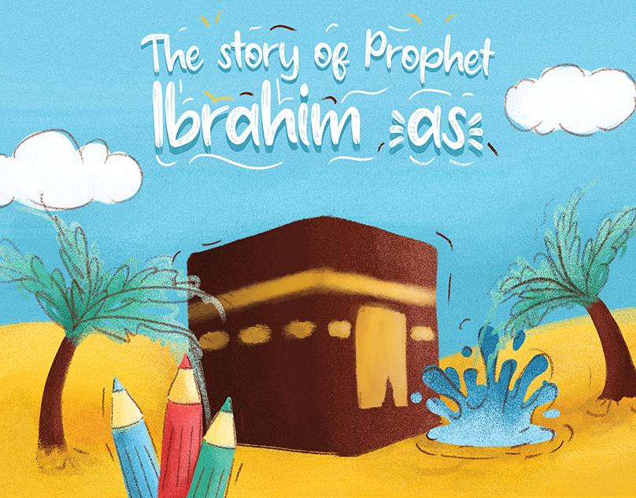
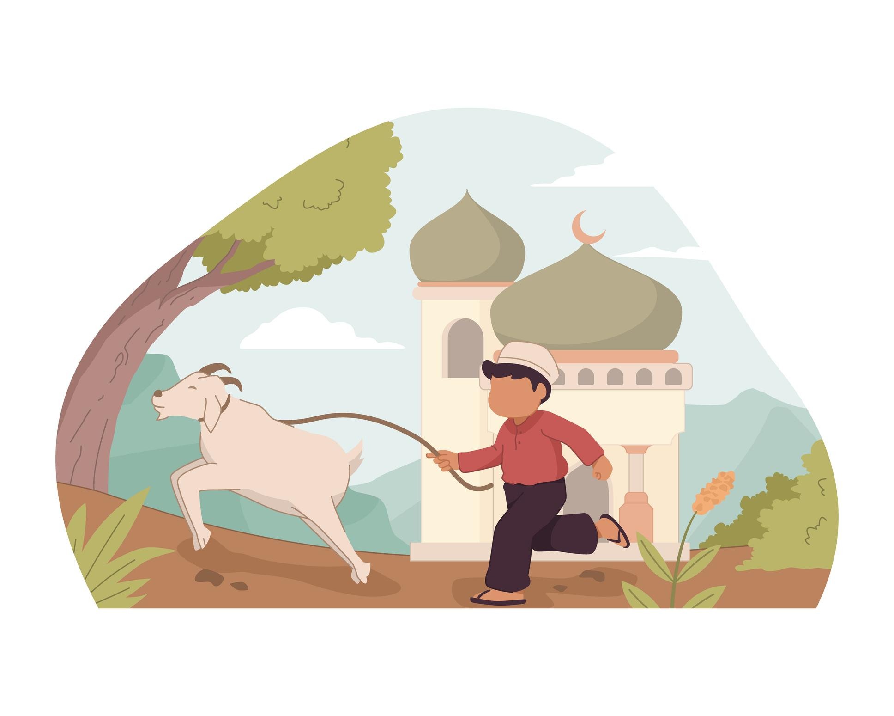

Eid al-Adha is one of the most important Islamic festivals celebrated by Muslims all around the world. It is a special
occasion that teaches lessons of faith, sacrifice, obedience, kindness, and unity. This blessed festival reminds Muslims of
the devotion of Prophet Ibrahim (A.S), who was willing to sacrifice his son to obey the command of Allah.
The importance of Eid ul Adha is not only in celebrating with family and friends, but also in helping poor and needy people.
Muslims sacrifice animals such as goats, cows, and camels, and the meat is shared among relatives, neighbors, and those who
cannot afford food. This act spreads love, equality, and compassion in society.
On this day, Muslims offer Eid prayers together and thank Allah for His blessings. People wear new clothes, prepare delicious
meals, and exchange greetings by saying “Eid Mubarak.” Families gather together to celebrate happiness and strengthen
relationships.
Eid ul Adha also teaches Muslims to be patient, generous, and thankful. It encourages people to care for others, forgive
mistakes, and spread peace in society. The festival is a reminder that true success comes from faith, obedience to Allah, and
helping humanity with sincerity and kindness.

Prophet Ibrahim (A.S) was one of the greatest prophets in Islam. He is known for his strong faith, patience, and complete obedience to Allah. From a young age, Prophet Ibrahim (A.S) believed in one God and rejected idol worship. At that time, many people in his community worshipped statues and idols, but he taught them that only Allah should be worshipped. One day, he broke the idols in the temple to show people that the idols could not help themselves or others. Because of this, the king and the people became very angry and threw him into a huge fire. However, Allah protected him, and the fire became cool and safe for him. Later, Allah tested Prophet Ibrahim (A.S) with a very difficult command. He saw in a dream that he had to sacrifice his beloved son, Prophet Ismail (A.S). Since prophets’ dreams are commands from Allah, he decided to obey. When Prophet Ibrahim (A.S) told his son about the dream, Prophet Ismail (A.S) also agreed to obey Allah with patience and faith. As Prophet Ibrahim (A.S) prepared to sacrifice him, Allah stopped him and sent a ram instead. This showed that both father and son were truly faithful and obedient. This important event is remembered every year during the Islamic festival of Eid al-Adha, also known as the Festival of Sacrifice.

Sacrifice means giving up something valuable for a good purpose. In Islam, sacrifice is an important lesson that teaches Muslims faith, obedience, patience, and kindness. The true meaning of sacrifice is not only about sacrificing animals on Eid al-Adha, but also about helping others, sharing blessings, and obeying Allah. The story of Prophet Ibrahim (A.S) is the greatest example of sacrifice. He was ready to sacrifice his beloved son to follow the command of Allah. Because of his strong faith and sincerity, Allah rewarded him and replaced his son with a ram. Sacrifice also teaches people to care for poor and needy people. During Eid ul Adha, Muslims distribute meat among family members, relatives, neighbors, and the poor. This creates love, unity, and equality in society. The lesson of sacrifice helps Muslims become better human beings by teaching them generosity, patience, and compassion. It reminds people that true happiness comes from helping others and obeying Allah with a sincere heart.